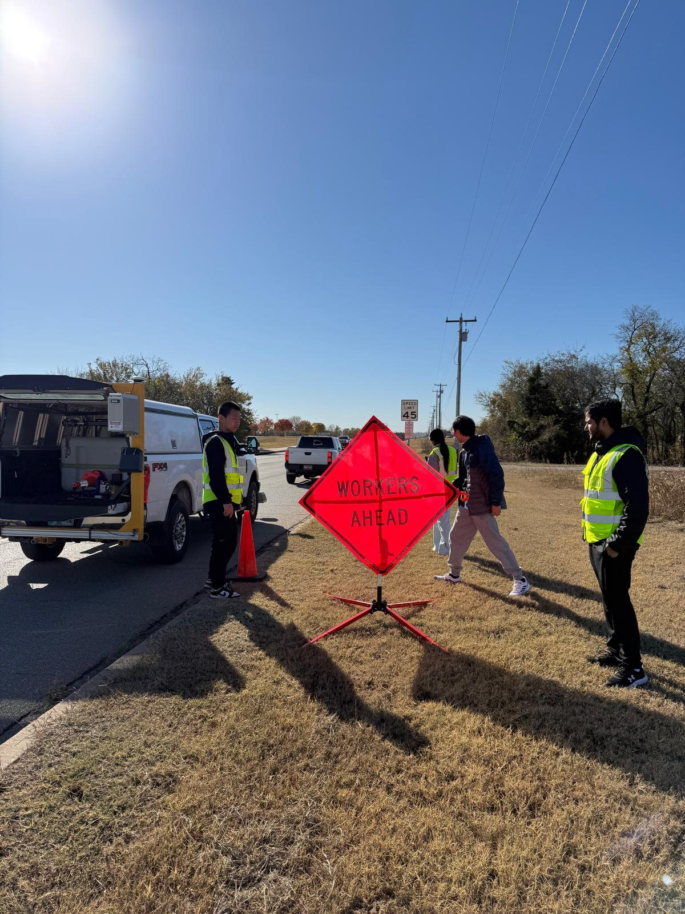
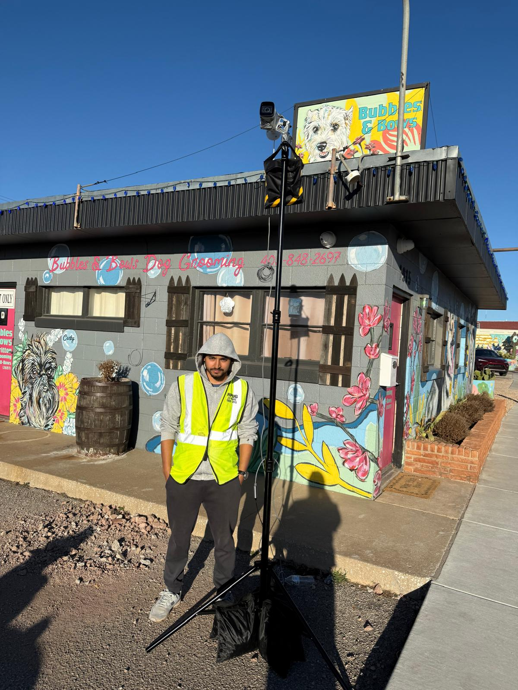
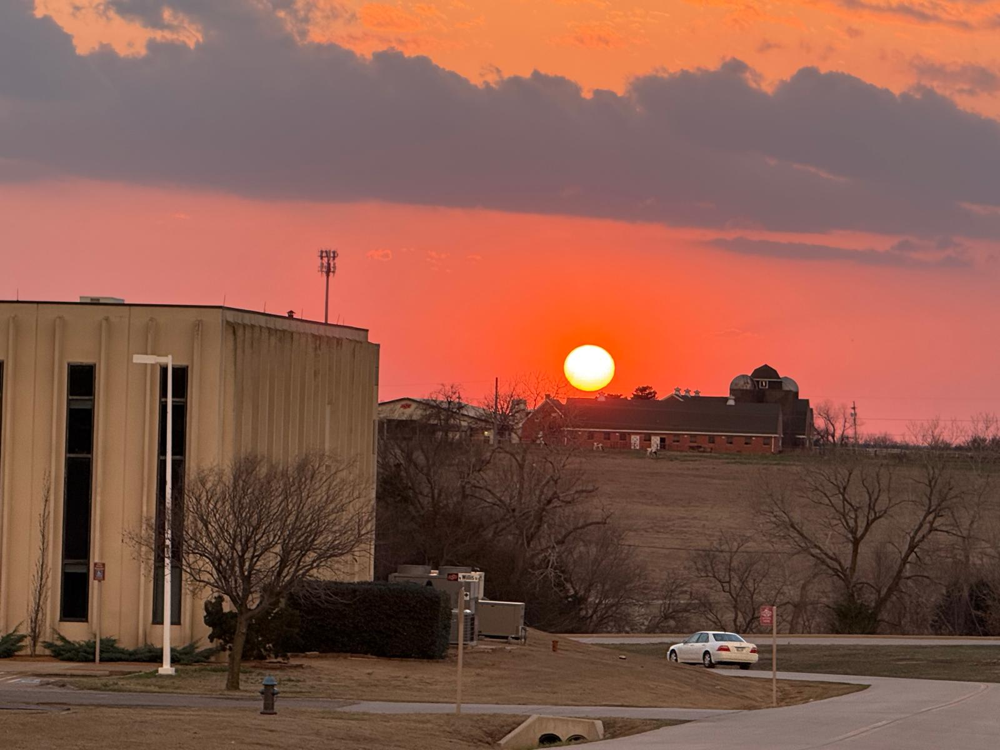
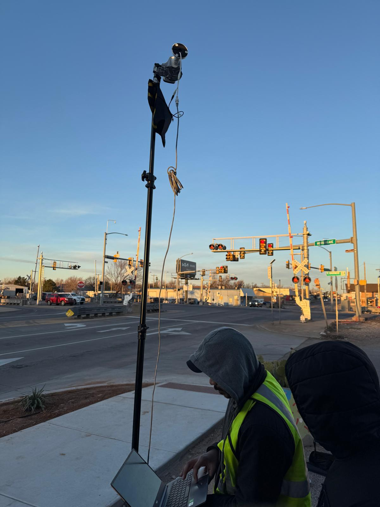
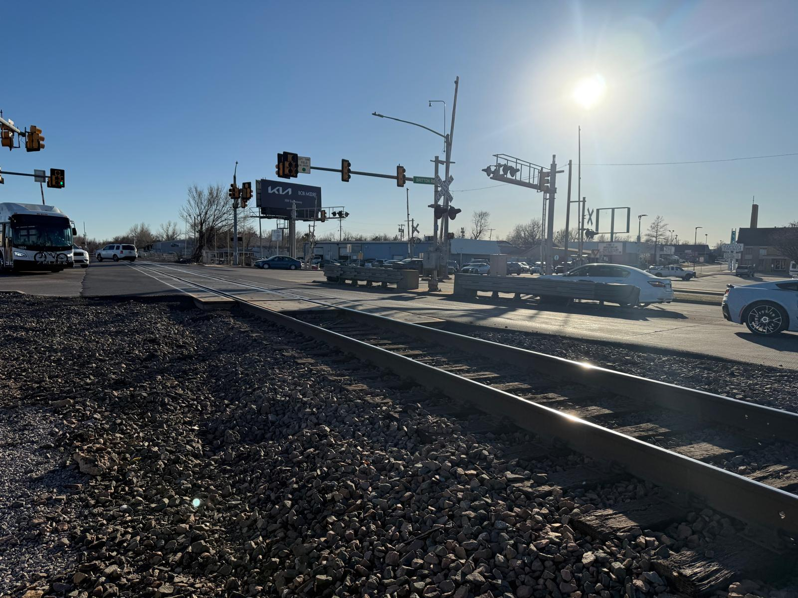

MS Civil Engineering — Transportation
Oklahoma State University
Aug 2024 — Aug 2026 · GPA 4.0 / 4.0
Transportation Safety & Analysis · Advanced Transportation Systems · Civil Infrastructure Systems · Project Management
Civil engineer working toward safer, more sustainable road infrastructure — through highway safety research, spatial analysis, and design.
About
I'm a civil engineering enthusiast dedicated to advancing infrastructure sustainability. I earned my bachelor's degree in civil engineering from Sagarmatha Engineering College, Institute of Engineering, Tribhuvan University in Nepal, and I'm completing my MS in Civil Engineering at Oklahoma State University.
Alongside my studies I work as a Research Assistant at the Transportation Infrastructure Lab, where my work centers on highway safety, GIS, and the development of resilient and sustainable road infrastructure.
What keeps me in this field is the desire to contribute something that lasts. A road is one of the few things an engineer builds that a whole community touches every day, and getting it right — safe, durable, worth what it costs — is a problem worth staying with.
I'm always glad to hear from people working on similar questions, whether that's a research collaboration or just a good conversation about transportation.
Interests
Understanding where crashes concentrate and why, and evaluating the countermeasures that actually move the number.
Mapping road networks and asking better questions of them — where the gaps are, what overlaps, what the geography is already telling us.
Infrastructure that holds up: materials, design decisions, and maintenance judged over decades rather than one budget cycle.
Field data collection, sensors, and traffic operations — the instrumentation that tells a state what its network is really doing.
Experience


Education
Transportation Safety & Analysis · Advanced Transportation Systems · Civil Infrastructure Systems · Project Management
Urban & Regional Transportation Planning · Transportation Engineering · Project Engineering
Tools & service
Design: AutoCAD · Civil 3D · MicroStation · OpenRoads
Analysis: Python · ArcGIS Pro · PTV VISSIM · SUMO · Excel
Delivery: MS Project
Highway Capacity Manual · Highway Safety Manual · MUTCD · ADA and PROWAG · FHWA Traffic Monitoring Guide
Restarted a dormant chapter at Oklahoma State and led a statewide transportation symposium — 150+ participants across 10+ technical sessions.
Ran merchandise logistics and marketing for a Kathmandu bookstore built on a hybrid inventory model.
Beyond work
Fieldwork puts me outside at good hours, so the camera comes along. Photos, clips, and whatever else is worth sharing from outside the office.



More on the way.